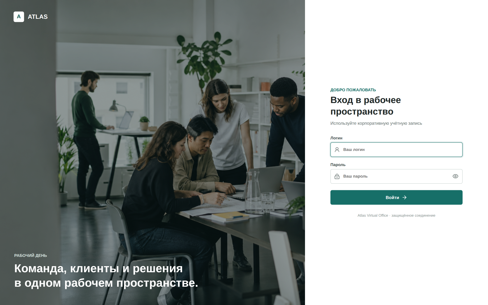
Клиенты, сделки, задачи, документы и личный прогресс — в едином защищённом пространстве.
ОНБОРДИНГ · 2026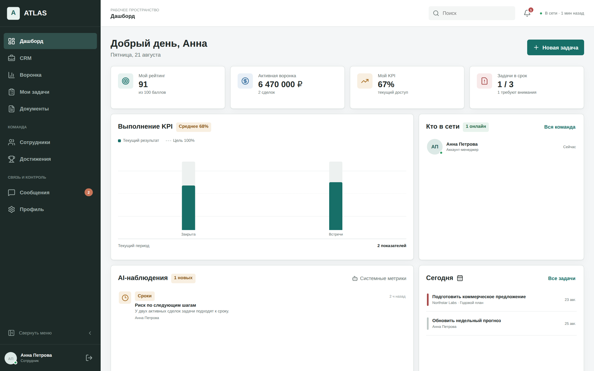
«Отчёты» и «Аудит» доступны только руководителям.
На общем компьютере всегда завершайте сеанс через кнопку выхода внизу меню.
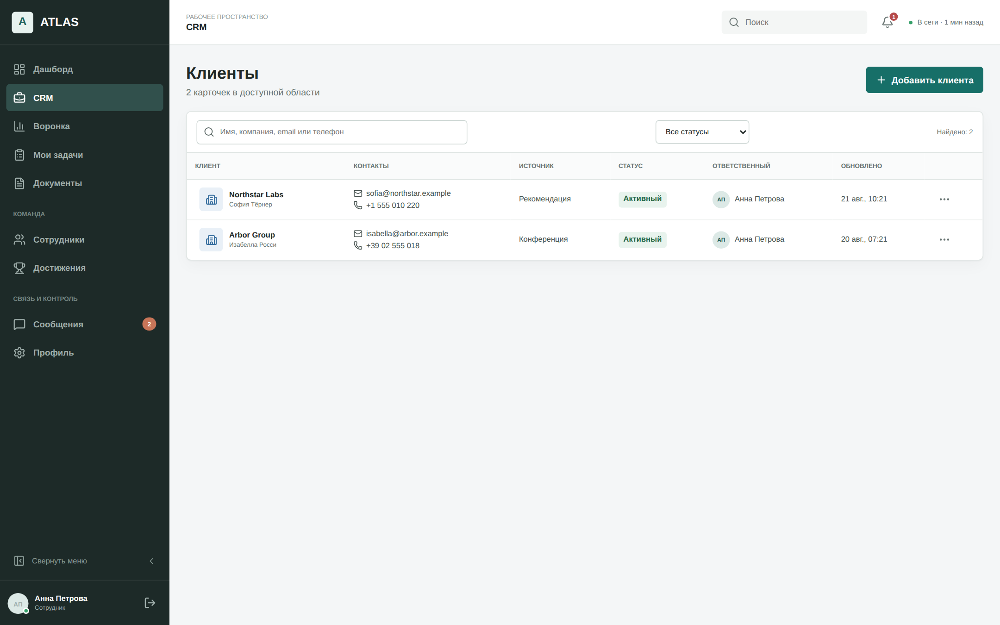
Массовый экспорт CRM сотруднику недоступен.
Ограничение действует на сервере.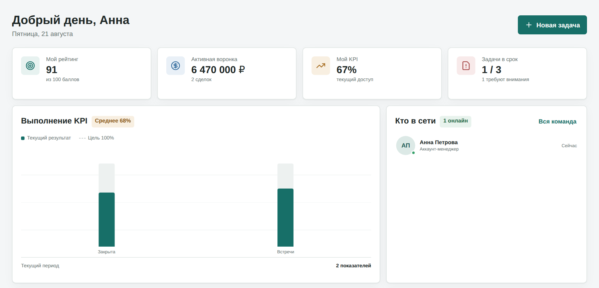
Дашборд → Мои задачи → Воронка
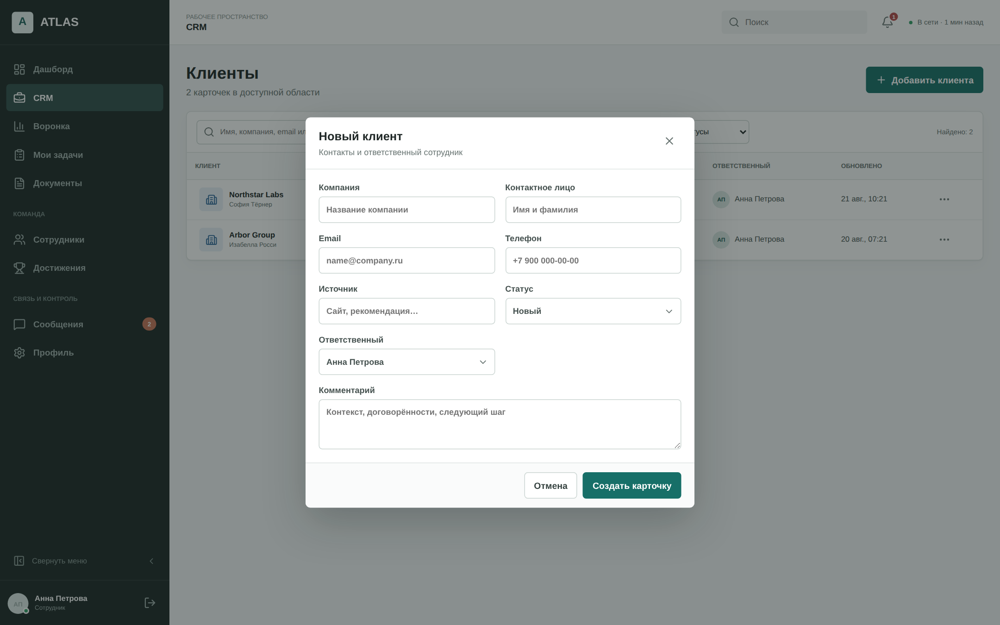
Ответственный назначается автоматически: это вы.
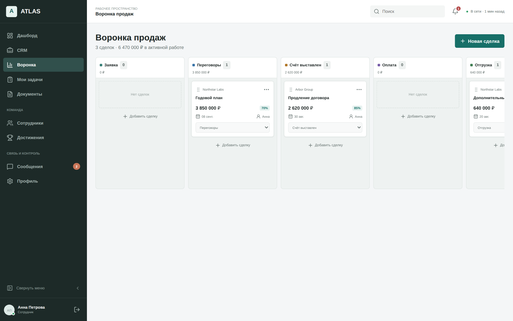
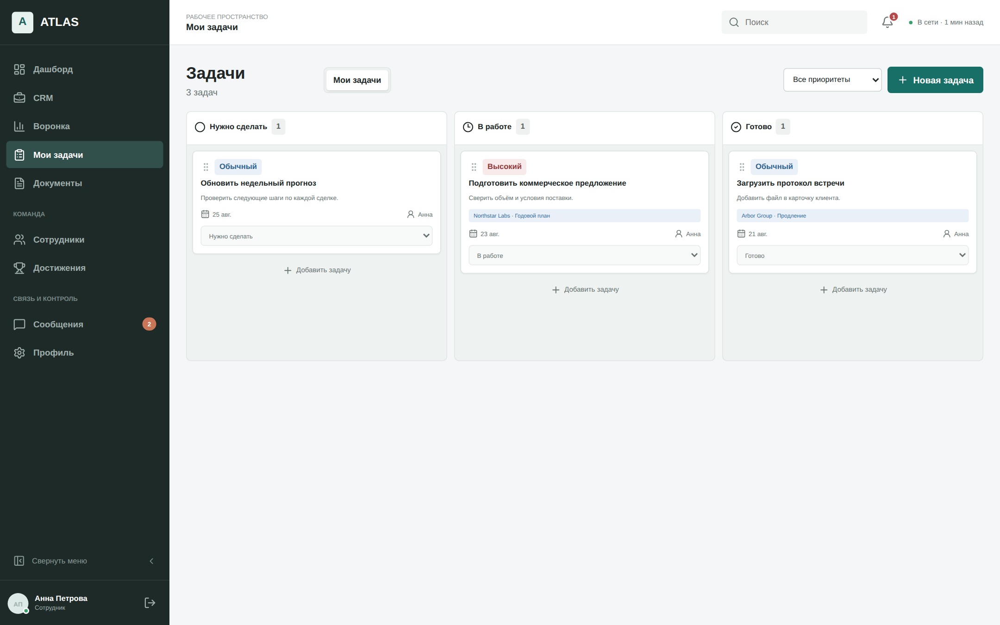
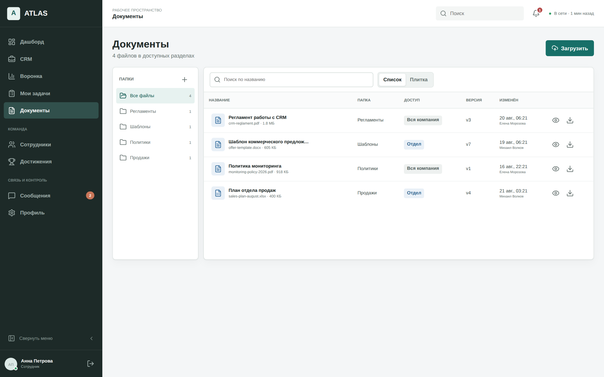
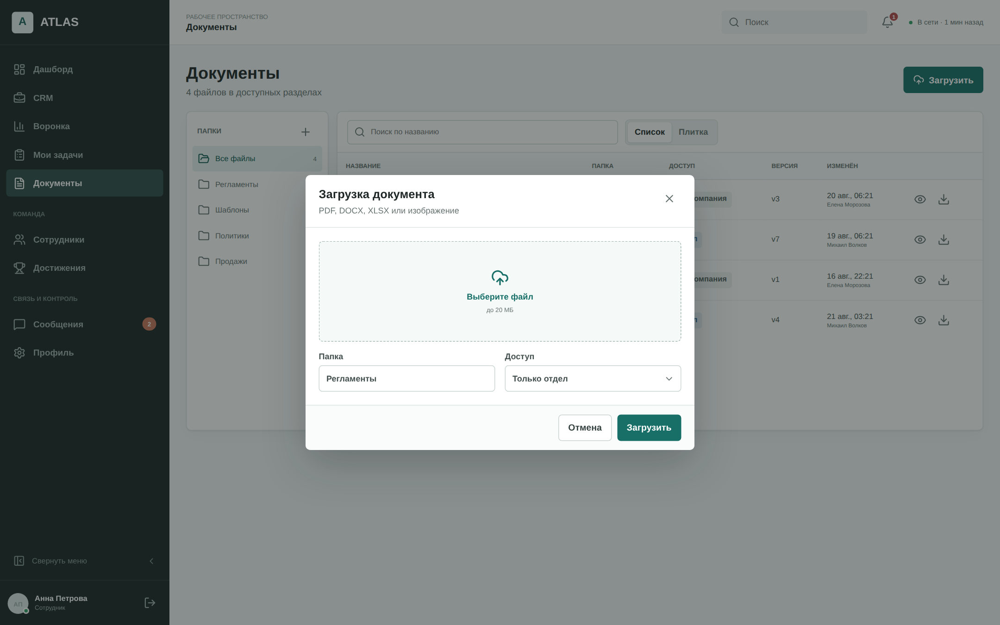
Сотрудник выбирает «Только отдел» или «Только я».
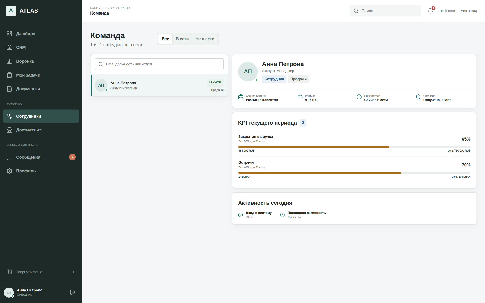
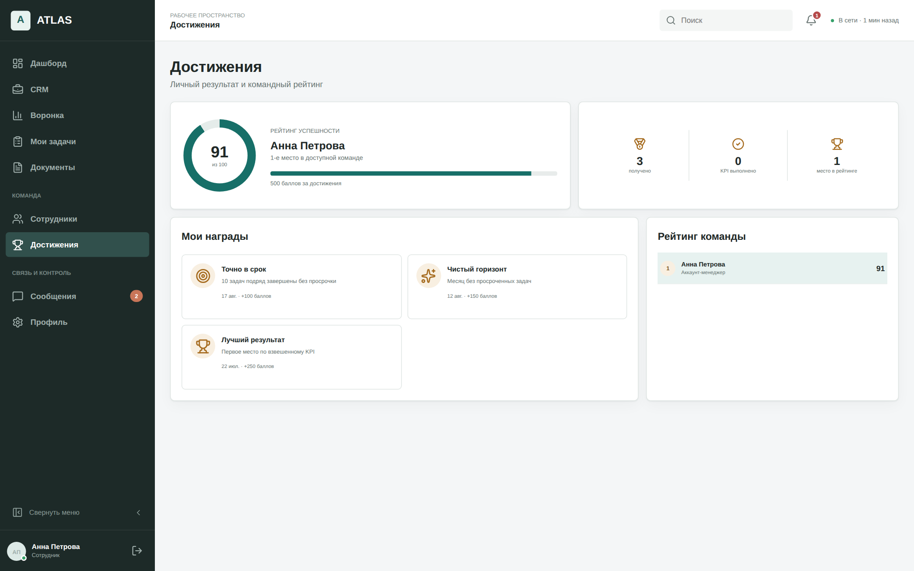
KPI цель, факт и срок
Рейтинг сводная оценка 0–100
Награды баллы за подтверждённые результаты
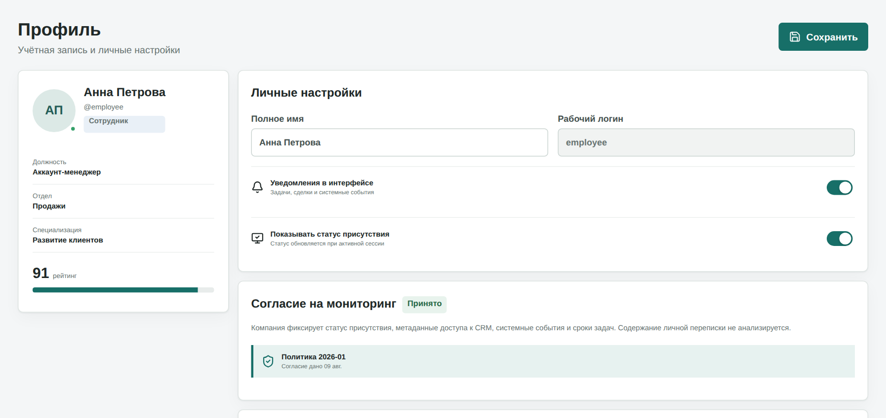
Системное наблюдение — повод проверить факт, а не вывод о человеке.
Присутствие обновляется при активной сессии
Согласие хранит версию политики и дату
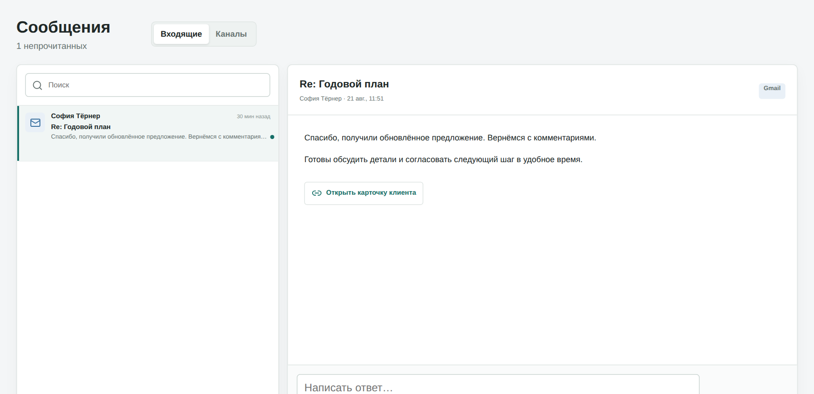
Внешние каналы появляются после настройки. Отправка внешних ответов пока недоступна.
Из сообщения → в карточку клиента
✓Войти и проверить профиль
✓Ознакомиться с политикой мониторинга
✓Просмотреть KPI и ближайшие сроки
✓Проверить клиентов, сделки и задачи
✓Найти регламенты в документах
✓Сообщить руководителю о неверных данных
✓Завершить сеанс после работы
Практика: откройте профиль, затем переведите учебную задачу в «В работе».